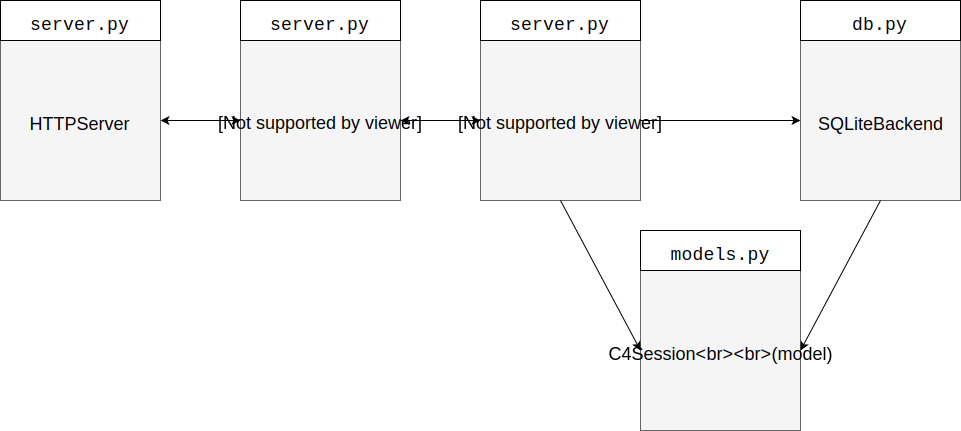
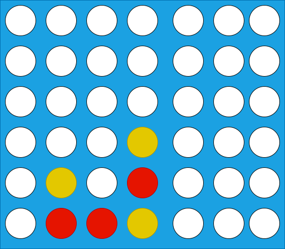
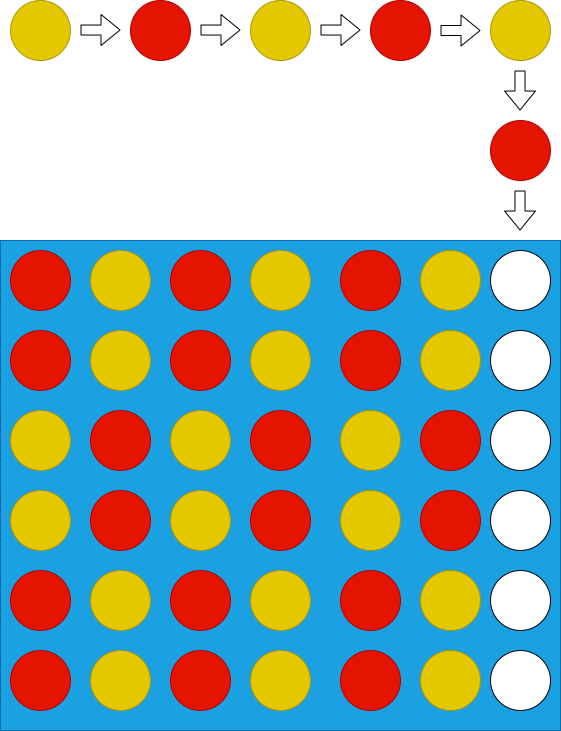
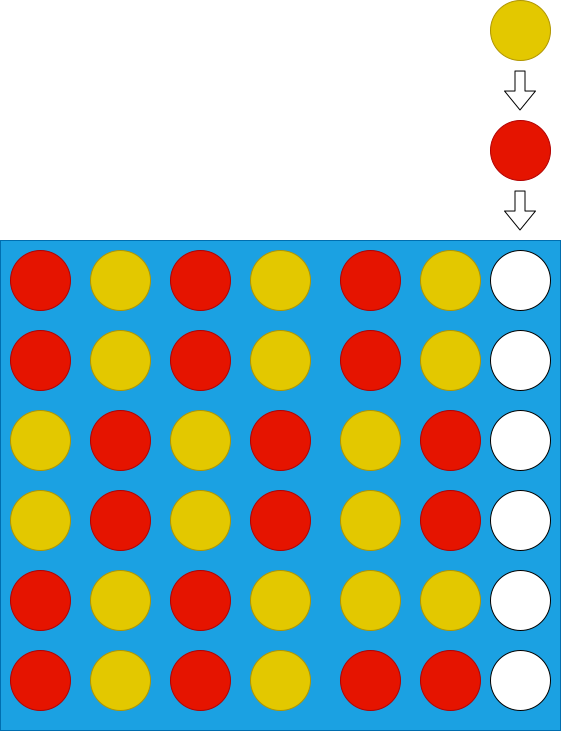

In this lab, you will write unit tests for an HTTP based Connect Four game. Our implementation uses the classic layout of 6 rows and 7 columns.
The goal of this lab are to design tests that use Test Doubles appropriately while visiting some other topics for software engineering (MVC Pattern, HTTP Requests, REST APIs, SQL) and having fun at the same time (who doesn’t enjoy playing Connect Four!).
The starter code consists of a very simple web application that uses the Model-View-Controller pattern to provide a REST API for users to play Connect Four.
The following diagram shows the interaction of the main application components:

The starter code (Python 3) is available form this link: lab06.tar.gz
Download the code and extract its content, you should have the following files:
src/connect4/server.py: the main entry point of the application and the controller that interacts with the input and output with end userssrc/connect4/models.py: Contains classes that drive the application logic.src/connect4/db.py: an interface that allows the applicaton to interact with a SQLite databaseThe starter code is meand to be started by simply executing the following command:
python3 src/connect4/server.py
However, this will start an HTTPServer listening in port 8080. If you run this in blue.cs.sonoma.edu chances are that someone already beat you to it and the port is already busy. Start your server specifying the port as 10000 + the last four digits of your sonoma state student id. For example, if your student id is 567888123, use this command:
python3 src/connect4/server.py --port 18123
Users can interact with the API with the following endpoints:
/join¶Allows users to either create or join a session. If there are open sessions, then the user will be assigned to the open sesssion with the second player role, else a new session will be created and the user will be assigned the first player role. A session is considered open if it only has the first player assigned.
To call this endpoint, the request must include the username url query parameter.
Here’s an example curl command that specifies john as its username (you will need to update the port number according to your selection of port when you started the server):
$ curl http://localhost:8081/join\?username\=moe {"msg": "Session created", "session": "3b5b5ef6-a486-4842-a5f3-0458a86499da", "player": 1}
A subsequent request will produce:
$ curl http://localhost:8081/join\?username\=larry {"msg": "Joined session.", "session": "3b5b5ef6-a486-4842-a5f3-0458a86499da", "player": 2}
The response includes a session identifier that users need to provide during calls to the other supported endpoints.
/move¶Instructs the server to apply a move. To call this endpoint the user must provide a session in the request Headers and the username and desired column to place the checker. The following is an example request:
$ curl -H 'session: 3b5b5ef6-a486-4842-a5f3-0458a86499da' http://localhost:8081/move\?username\=moe\&column\=1 {"msg": "success", "game_status": "in progress", "winner": "None"}
When a player tries to make a move and it is not their turn, an error is returned:
$ curl -H 'session: 3b5b5ef6-a486-4842-a5f3-0458a86499da' http://localhost:8081/move\?username\=moe\&column\=1 {"error": "Player not allowed to make a move at this time."}
If after applying the move the game ends (due to a winner connecting 4 checkers or due to no more spaces available), this is reflected in the game status and the winner fields included in the response.
$ curl -H 'session: 3b5b5ef6-a486-4842-a5f3-0458a86499da' http://localhost:8081/move\?username\=moe\&column\=6 {"msg": "success", "game_status": "ended", "winner": "moe"}%
/status¶Returns the status of a current session. Requires the session request Header.
The response includes the board representation as a 2D array with values equal to 0, 1 and 2 (open, player 1, player 2). Row 0 corresponds to the bottom row in a physical connect four grid with index 0 corresponding to the leftmost column. The response also includes the winner (with value 0 corresponding to no winner, and 1 and 2 corresponding to either player) and next with specifies which player must make the next move (0 corresponds to an ended game, and 1 and 2 to either player).
$ curl -H 'session: 708351fd-81b7-4710-86f8-e652b868ffff' http://localhost:8081/status {"board": [[" ", "1", "1", "2", " ", " ", " "], [" ", "2", " ", "1", " ", " ", " "], [" ", " ", " ", "2", " ", " ", " "], [" ", " ", " ", " ", " ", " ", " "], [" ", " ", " ", " ", " ", " ", " "], [" ", " ", " ", " ", " ", " ", " "]], "winner": 0, "
The previous response will correspond to this board:

The Connect Four service uses a database to store game (session) data. All the interactions with the database are handled by the methods of the SQLiteBackend class in the db.py module. The service uses a very simple table with only 5 rows:
id: and identifier in the form of a UUID. This is the session id that is generated/assigned when a user calls the /join endpoint and that needs to be passed as a request header for /move and /status.board: the status of the board as a 42 ( 6 rows x 7 columns ) character string, with values equal to a whitespace (‘ ‘) to represent an open cell, and ‘1’ and ‘2’ for either player. The first 7 characters (0-6) correspond to the bottom row in a physical grid, with the smallest index within a row corresponds to the leftmost column.player_1: the name of player 1player_2: the name of player 2status: an integer that represents 0 if the game is in progress, 1 if player 1 has won, 2 if player 2 has won, and 3 if the game ended in a draw.The SQLiteBackend class implements the following public interface:
get_session(str): returns a C4Session object that matches the session_id argument.find_open_sessions(): returns all C4Session objects that correspond to open sessions. (should always return only one, but due to race conditions it is feasible to return more than one.)save_session(C4Session): Persists (insert or updates) a session object into the database. It does not return any values.You are asked to implement the following test cases. You will need to use Test doubles (spies, stubs, mocks and fakes as you deem appropriate) to be able to implement them.
For /join:
For /move:
For /status
When users join a session, there is nothing that makes sure that the names of the users are different.
This will cause a problem where the game becomes unplayable.
Modify the ConnectFourController.join method to prevent player2 to have the same name as the player1 in the currently open session.
Return a 400 status code and an error message equal to Must use a different username.
Add the corresponding tests.
There are several configurations when a game can be eagerly determined to be ended as a draw or a win. The easiest case is when all the remaining open spaces are in a single column. In the following example, you can see that the game will result in draw (red moves next)

In this other case you can see that yellow has already won the game (red moves next):

Enhance the C4session.apply_move method by adding a check that will mark the game as ended if the configuration leads to a game that invariably will be won or drawn.
Since the goal here is not to do a full depth search, plus we want our service to provide a fast response, we only want to make this verification when the grid has only one column open.
Once you have modified C4session.apply_move with this logic, add the corresponding unittests.